Binary classification
Source:vignettes/articles/Binary-classification.Rmd
Binary-classification.RmdGenerating data set
The main function is sim_response_xy, you need to
define:
- A number of observations to simulate.
- Distributions to sample
and
.
For example
purrr::partial(runif, min = -1, max = 1). - A function to define the relation between the response and the
and
,
for example
function(x, y) x > yThis function must return a logical value. - A number to define the noise in the generated data.
library(klassets)
library(ggplot2)
library(patchwork)
set.seed(123)
df_default <- sim_response_xy(n = 500)
df_default
#> # A tibble: 500 × 3
#> response x y
#> <fct> <dbl> <dbl>
#> 1 FALSE -0.425 -0.293
#> 2 TRUE 0.577 -0.267
#> 3 FALSE -0.182 -0.426
#> 4 TRUE 0.766 -0.840
#> 5 TRUE 0.881 -0.269
#> 6 FALSE -0.909 -0.644
#> 7 FALSE 0.0562 0.0721
#> 8 TRUE 0.785 0.00790
#> 9 TRUE 0.103 0.890
#> 10 TRUE -0.0868 -0.317
#> # ℹ 490 more rows
plot(df_default)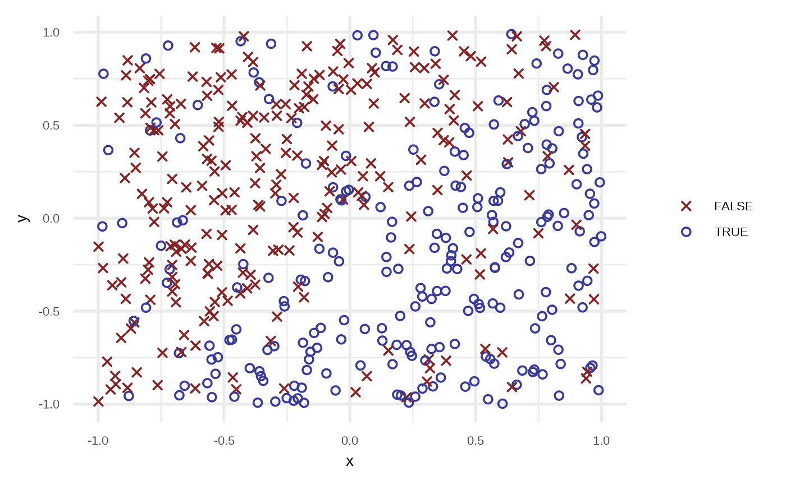
df <- sim_response_xy(
n = 500,
x_dist = purrr::partial(runif, min = -1, max = 1),
# relationship = function(x, y) sqrt(abs(x)) - x - 0.5 > sin(y),
relationship = function(x, y) sin(x*pi) > sin(y*pi),
noise = 0.15
)
plot(df)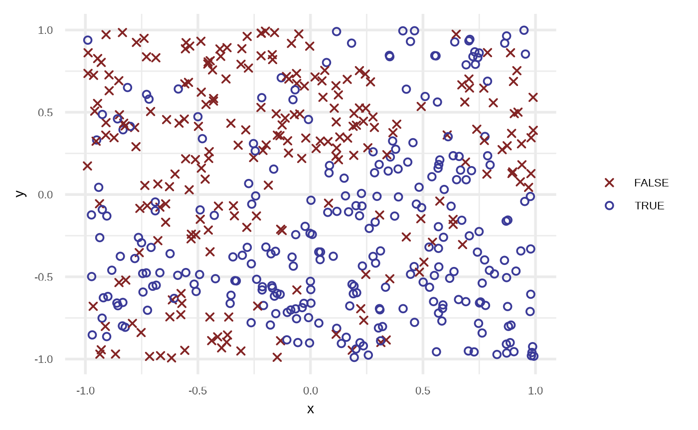
Fit classification algorithms
Logistic Regression
df_lr <- fit_logistic_regression(df)
df_lr
#> # A tibble: 500 × 4
#> response x y prediction
#> <fct> <dbl> <dbl> <dbl>
#> 1 TRUE 0.876 -0.681 0.885
#> 2 TRUE 0.976 -0.711 0.899
#> 3 TRUE -0.0874 -0.702 0.745
#> 4 FALSE -0.539 0.0289 0.385
#> 5 TRUE 0.391 -0.0143 0.637
#> 6 FALSE 0.113 0.233 0.478
#> 7 TRUE 0.169 -0.105 0.614
#> 8 FALSE -0.133 -0.889 0.785
#> 9 FALSE -0.148 -0.989 0.807
#> 10 TRUE 0.194 -0.556 0.760
#> # ℹ 490 more rows
plot(df_lr)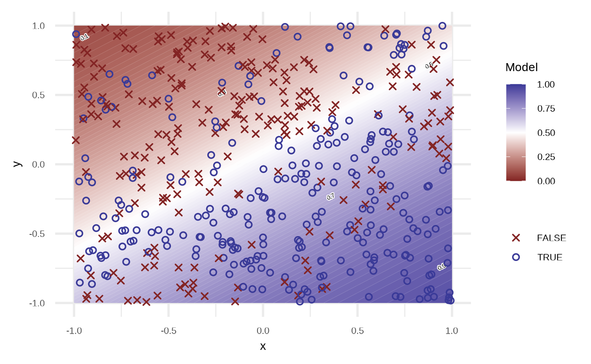
By default the model use order = 1 of the variables,
i.e, response ~ x + y. We can get a better fit if we
increase the order.
df_lr2 <- fit_logistic_regression(df, order = 4, stepwise = TRUE)
attr(df_lr2, "model")
#>
#> Call: glm(formula = response ~ x + y + x_3 + y_3, family = binomial,
#> data = df)
#>
#> Coefficients:
#> (Intercept) x y x_3 y_3
#> 0.1533 3.3121 -4.4480 -3.3786 4.6436
#>
#> Degrees of Freedom: 499 Total (i.e. Null); 495 Residual
#> Null Deviance: 690.8
#> Residual Deviance: 518 AIC: 528
plot(df_lr2)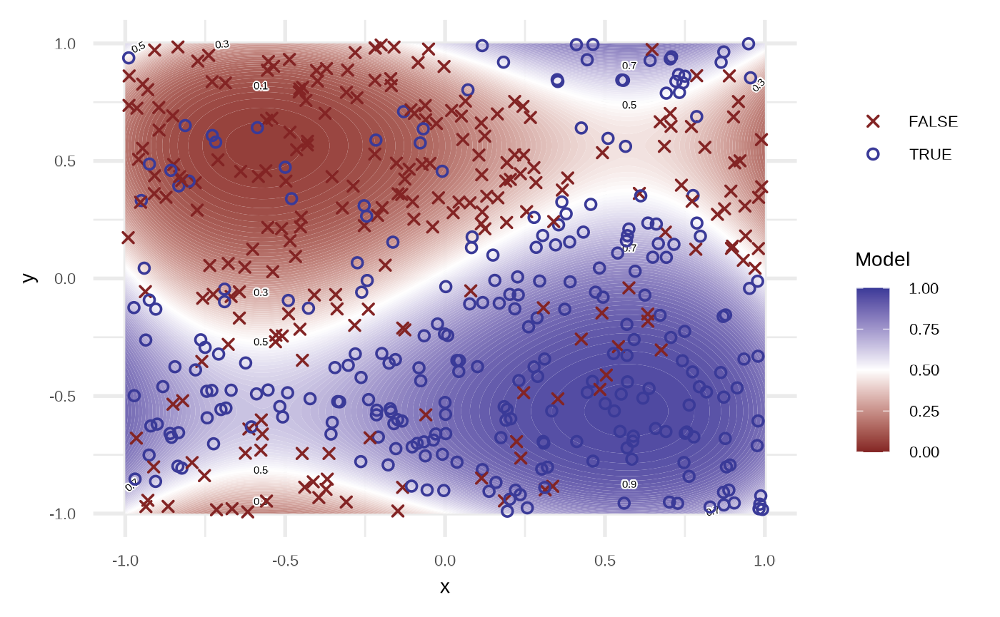
Testing various orders.
orders <- c(1, 2, 3, 4)
orders |>
purrr::map(fit_logistic_regression, df = df) |>
purrr::map(plot) |>
purrr::reduce(`+`) +
patchwork::plot_layout(guides = "collect") &
theme_void() + theme(legend.position = "none")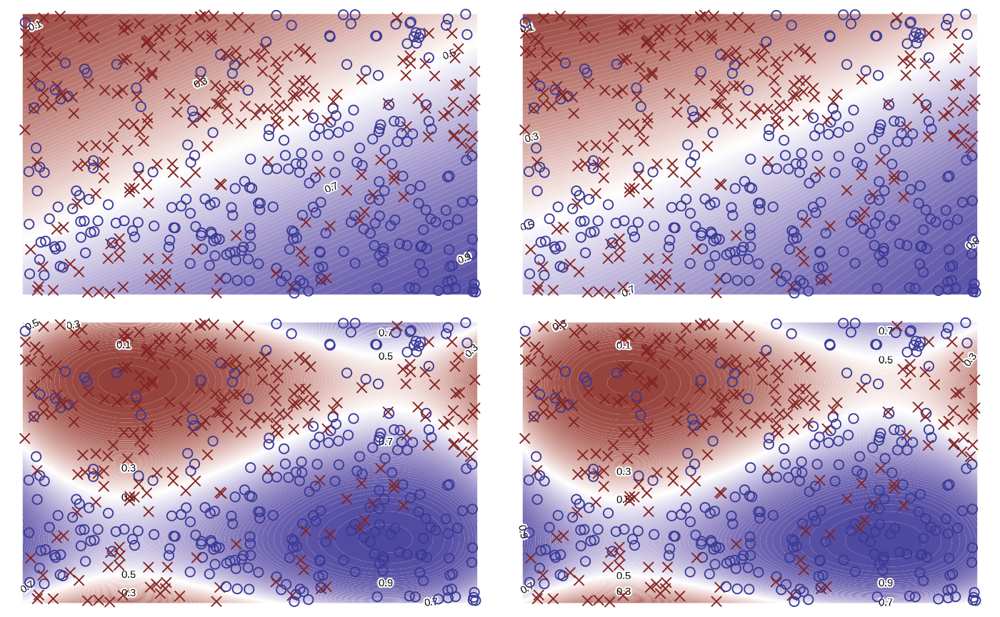
Classification Tree
df_rt <- fit_classification_tree(df)
plot(df_rt)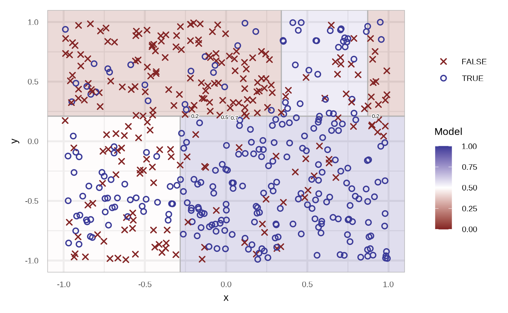
plot(fit_classification_tree(df, alpha = 0.25))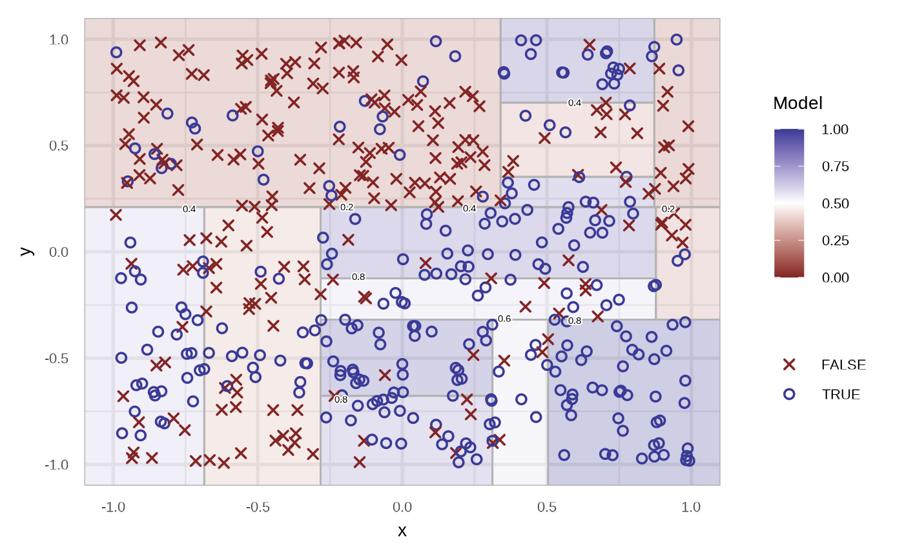
The region are filled with the probability of the respective node. We
can specify the type of the prediction using the type
argument. In the case of response.
df_rt_response <- fit_classification_tree(df, type = "response")
df_rt_response
#> # A tibble: 500 × 4
#> response x y prediction
#> <fct> <dbl> <dbl> <fct>
#> 1 TRUE 0.876 -0.681 TRUE
#> 2 TRUE 0.976 -0.711 TRUE
#> 3 TRUE -0.0874 -0.702 TRUE
#> 4 FALSE -0.539 0.0289 FALSE
#> 5 TRUE 0.391 -0.0143 TRUE
#> 6 FALSE 0.113 0.233 FALSE
#> 7 TRUE 0.169 -0.105 TRUE
#> 8 FALSE -0.133 -0.889 TRUE
#> 9 FALSE -0.148 -0.989 TRUE
#> 10 TRUE 0.194 -0.556 TRUE
#> # ℹ 490 more rows
plot(df_rt_response)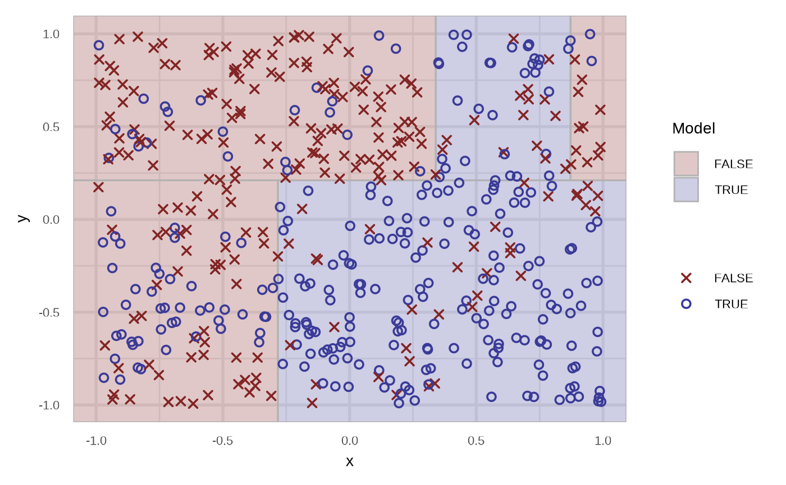
And now for the node.
df_rt_node <- fit_classification_tree(df, type = "node", maxdepth = 3)
df_rt_node
#> # A tibble: 500 × 4
#> response x y prediction
#> <fct> <dbl> <dbl> <int>
#> 1 TRUE 0.876 -0.681 4
#> 2 TRUE 0.976 -0.711 4
#> 3 TRUE -0.0874 -0.702 4
#> 4 FALSE -0.539 0.0289 3
#> 5 TRUE 0.391 -0.0143 4
#> 6 FALSE 0.113 0.233 6
#> 7 TRUE 0.169 -0.105 4
#> 8 FALSE -0.133 -0.889 4
#> 9 FALSE -0.148 -0.989 4
#> 10 TRUE 0.194 -0.556 4
#> # ℹ 490 more rows
plot(df_rt_node)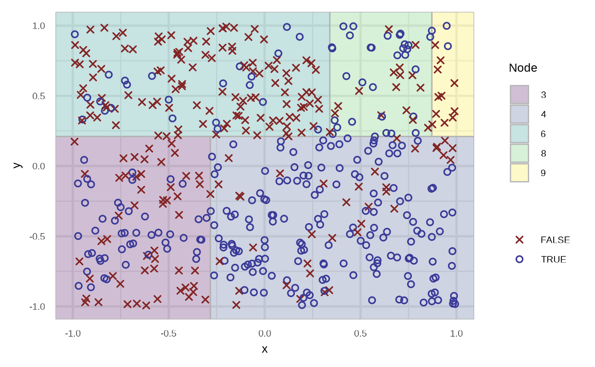
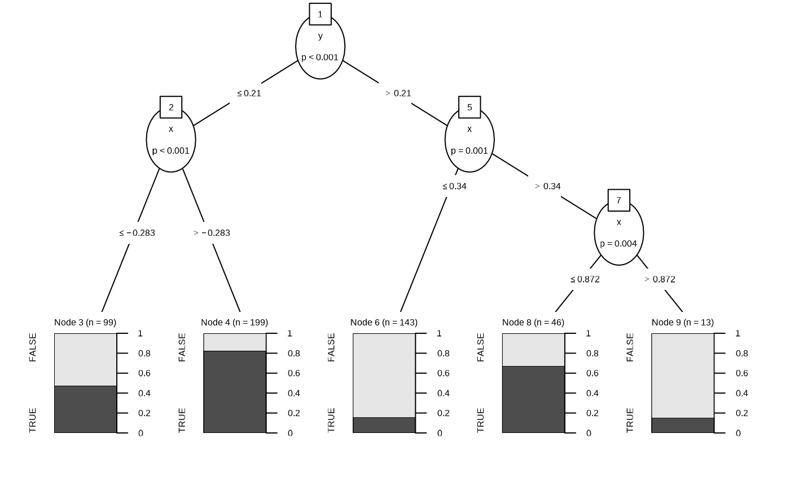
K Nearest Neighbours
With the class::knn implementation.
# defaults to prob
fit_knn(df)
#> # A tibble: 500 × 4
#> response x y prediction
#> <fct> <dbl> <dbl> <dbl>
#> 1 TRUE 0.876 -0.681 1
#> 2 TRUE 0.976 -0.711 1
#> 3 TRUE -0.0874 -0.702 1
#> 4 FALSE -0.539 0.0289 0.9
#> 5 TRUE 0.391 -0.0143 0.8
#> 6 FALSE 0.113 0.233 0.8
#> 7 TRUE 0.169 -0.105 0.9
#> 8 FALSE -0.133 -0.889 0.8
#> 9 FALSE -0.148 -0.989 0.6
#> 10 TRUE 0.194 -0.556 0.7
#> # ℹ 490 more rows
fit_knn(df, type = "response")
#> # A tibble: 500 × 4
#> response x y prediction
#> <fct> <dbl> <dbl> <fct>
#> 1 TRUE 0.876 -0.681 TRUE
#> 2 TRUE 0.976 -0.711 TRUE
#> 3 TRUE -0.0874 -0.702 TRUE
#> 4 FALSE -0.539 0.0289 FALSE
#> 5 TRUE 0.391 -0.0143 TRUE
#> 6 FALSE 0.113 0.233 FALSE
#> 7 TRUE 0.169 -0.105 TRUE
#> 8 FALSE -0.133 -0.889 TRUE
#> 9 FALSE -0.148 -0.989 TRUE
#> 10 TRUE 0.194 -0.556 TRUE
#> # ℹ 490 more rows
plot(fit_knn(df))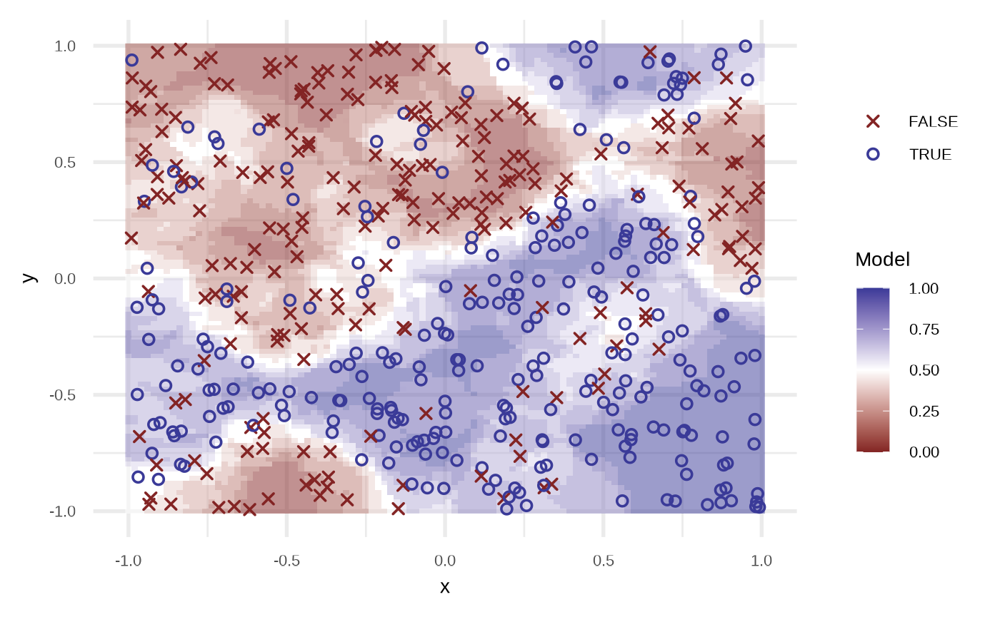
neighbours <- c(3, 10, 50, 300)
purrr::map(neighbours, fit_knn, df = df) |>
purrr::map(plot) |>
purrr::reduce(`+`) +
patchwork::plot_layout(guides = "collect") &
theme_void() + theme(legend.position = "none")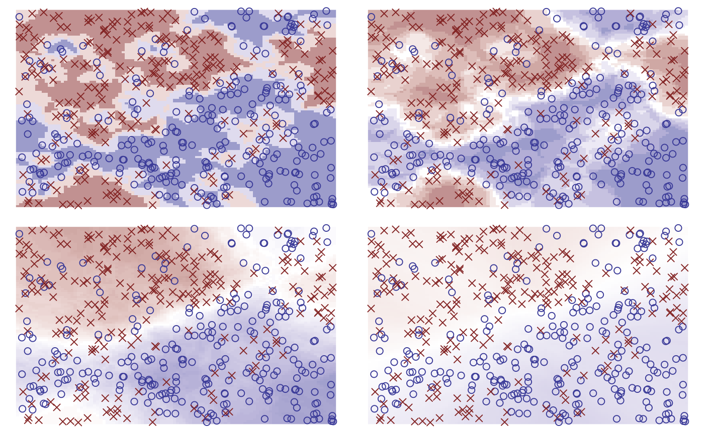
purrr::map(neighbours, fit_knn, df = df, type = "response") |>
purrr::map(plot) |>
purrr::reduce(`+`) +
patchwork::plot_layout(guides = "collect") &
theme_void() + theme(legend.position = "none")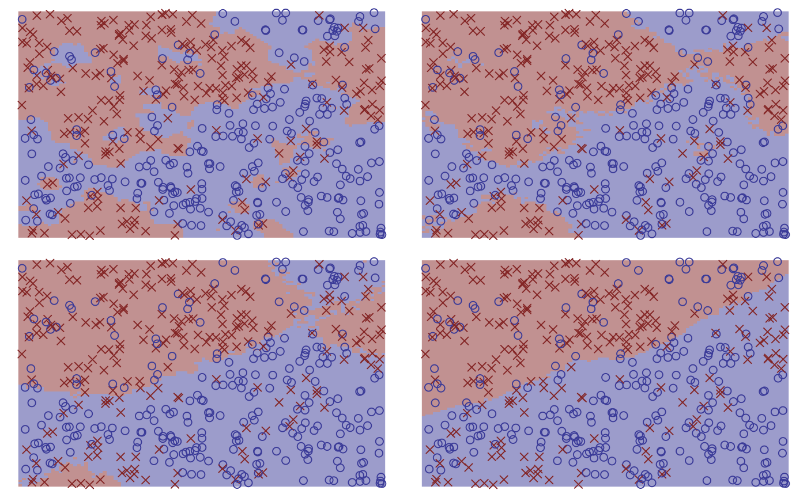
Random Forest
Using the ranger::ranger function.
df_crf <- fit_classification_random_forest(df)
plot(df_crf)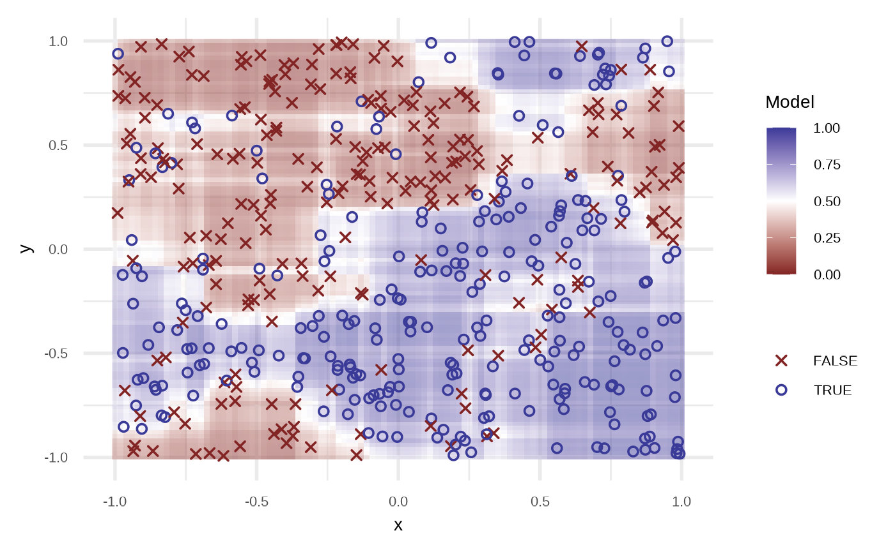
df_crf
#> # A tibble: 500 × 4
#> response x y prediction
#> <fct> <dbl> <dbl> <dbl>
#> 1 TRUE 0.876 -0.681 0.984
#> 2 TRUE 0.976 -0.711 0.952
#> 3 TRUE -0.0874 -0.702 0.905
#> 4 FALSE -0.539 0.0289 0.173
#> 5 TRUE 0.391 -0.0143 0.899
#> 6 FALSE 0.113 0.233 0.264
#> 7 TRUE 0.169 -0.105 0.946
#> 8 FALSE -0.133 -0.889 0.702
#> 9 FALSE -0.148 -0.989 0.500
#> 10 TRUE 0.194 -0.556 0.922
#> # ℹ 490 more rows